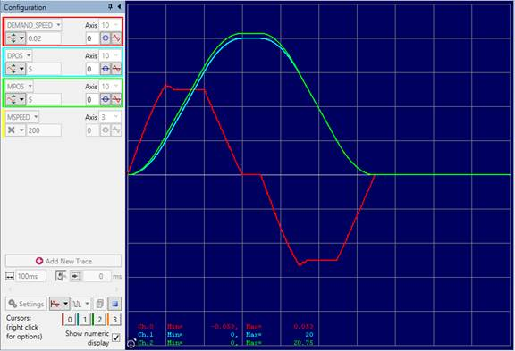

Axis Command
BACKLASH(enable [,distance, speed, acceleration])
This axis function allows backlash compensation to be loaded. This is achieved by applying an offset move when the motor demand is in one direction, then reversing the offset move when the motor demand is in the opposite direction. These moves are superimposed on the commanded axis movements.
The backlash compensation is applied after a reversal of the direction of change of the DPOS parameter.
The backlash compensation can be seen in the AXIS_DPOS axis parameter. This is effectively DPOS + backlash compensation.
|
enable: |
ON to enable BACKLASH |
|
OFF to disable BACKLASH |
|
|
distance: |
The distance to be offset in user units |
|
speed: |
The speed at which is the compensation move is applied in user units |
|
acceleration: |
The ACCEL / DECEL rate at which is compensation move is applied in user units |
'Apply backlash compensation on axes 0 and 1:
'0.5 mm movement at 10 mm/sec with accel 50 mm/sec/sec
BACKLASH(ON,0.5,10,50) AXIS(0)
'0.4 mm movement at 8 mm/sec with accel 50 mm/sec/sec
BACKLASH(ON,0.4,8,50) AXIS(1)
'Turn off backlash compensation on axis 3:
BASE(3)
BACKLASH(OFF)
Showing the backlash movement on Motion Perfect oscilloscope for a move 20 mm at the programmed speed 100 mm/sec.
SPEED = 100
ACCEL = SPEED * 10
DECEL = SPEED * 10
TRIGGER
'Apply backlash compensation on axis:
' Syntax is BACKLASH(enable [,distance, speed, acceleration])
BACKLASH(ON, 0.75, 10, 50) '0.75 mm backlash
MOVE(20)
WAIT IDLE
WA(50)
MOVE(-20)
 WAIT IDLE
The MPOS is advanced by the backlash distance. The extra movement applied at the start of the MOVE(20) can be seen as a short increase in the speed. The speed during the Backlash compensation movement is SPEED + speed_in_backlash_command.